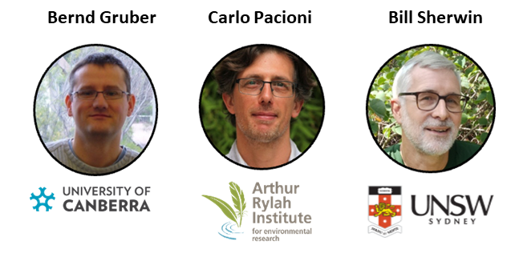

library(dartR.base)
library(ggplot2)
# library(geohippos) # Oh package, Where Art Thou?5 Effective Population Size
Session Presenters

Required packages
make sure you have the packages installed, see Install dartRverse
Session Content
Introduction
Ne is important for conservation and management of populations. It is an indicator of the genetic diversity of a population and is used to estimate the probability of extinction.
Effective population size (Ne) is a concept in population genetics that refers to the number of breeding individuals in an idealized population that would show the same amount of genetic drift or inbreeding or linkage disequilbrium or coalescent as the population under study. Unlike the actual census size (Nc), which counts all individuals within a population, Ne focuses on those contributing genes to the next generation, offering a more precise understanding of a population’s genetic health and potential for evolutionary change.
The 50/500 rule is a guideline in conservation biology that relates to the effective population size (Ne) and its implications for the conservation of species. This rule was first proposed by Franklin in 1980 and later expanded by Soule in 1986. It serves as a rule of thumb for determining the minimum viable population sizes needed to prevent inbreeding depression in the short term and maintain evolutionary potential over the long term.
Be aware the 50/500 rule is a rule of thumb and should be used with caution. It is not a one-size-fits-all rule and should be used in conjunction with other information about the species and its habitat. It has been criticized for being too simplistic and not taking into account the specific needs of individual species.
1. Current effective population size
Carlo
2. Historic effective population size
2a Based on SFS
The Site Frequency Spectrum (SFS), sometimes referred to as the allele frequency spectrum, is a fundamental concept in population genetics that describes the distribution of allele frequencies at polymorphic sites within a sample of DNA sequences from a population. It provides a powerful summary of the genetic variation present in the population, capturing information about the history of mutations, demographic events (such as population expansions or bottlenecks). There are several methods to estimate historic, but we explore only two here: Epos (lynch2019?) and Stairways2 (liu2020?)
The SFS
It is straight forward to create the sfs from a genlight/dartR object. But first you want to make sure you do not have missing data in your dataset, because the allele frequency spectrum is sensitive to missing data.
# Load the data
gl100 <- readRDS("./data/slim_100.rds")
# check the population size and number of populations
table(pop(gl100))
# number of individuals
nInd(gl100)
# number of loci
nLoc(gl100)
# create
sfscon <- gl.sfs(gl100, folded = TRUE)
sfsconAs you can see the is simply a table of the number of alleles at each frequency. Be aware the the sfs is folded by default, but you can change this with the argument folded = FALSE. In most of the cases we will use the folded=TRUE option as you need phased data to use the unfolded sfs (and also have an idea which state is the ancestral one. Often the genomic of an ancestral outgroup is used for this information).
# unfolded sfs
un.sfs <- gl.sfs(gl100, folded = FALSE)
un.sfsIn addition it is possible to create multidimensional sfs, which is useful for example when you have multiple populations (in case you want to have that use: singlepop=FALSE). Be aware if you want to create and multidimensional sfs from more than say 3 populations a 30 individuals you create a huge array of dimensions (61 x 61 x 61), with mainly zeros. So often multidemensional sfs are not very useful.
EXERCISE
Exercise
 Still to come…
Still to come…
Further Study
still to come…